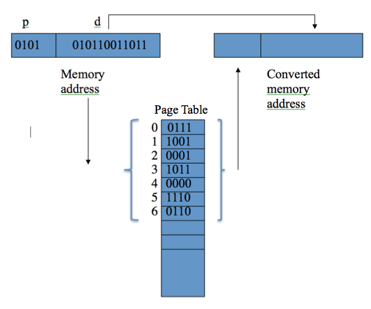
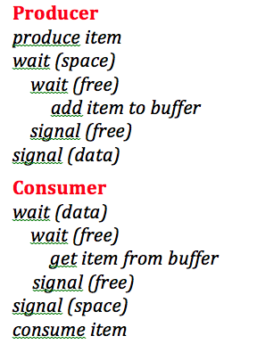

Master Operating Systems concepts with our comprehensive 110-question quiz featuring detailed explanations,
diverse question categories, and immediate feedback to enhance your learning experience.
📚
Comprehensive Coverage
110 carefully crafted questions covering all major OS topics from file systems to process management
💡
Detailed Explanations
Each question includes thorough explanations to help you understand the concepts and reasoning
🎯
Categorized Learning
Questions organized by topic areas including Memory Management, File Systems, Process Control, and more
📊
Progress Tracking
Track your progress with detailed scoring, performance analysis, and review capabilities
110Total Questions
12Topic Categories
∞Retake Attempts
Question 1 of 110
A
B
C
D
💡 Detailed Explanation
🔑 Key Concepts:
🔗 Related Topics:
🎉 Quiz Complete!
Congratulations on completing the Operating Systems Extra Quiz!
0/ 110
0%
📊 Performance Analysis
✅
0
Correct Answers
❌
0
Incorrect Answers
💪
0
Strong Areas
📚
0
Areas to Improve
📋 Performance by Category
📚 Operating Systems Study Notes
🔄 Process Management
Process States
NEW: Process is being created
READY: Process is waiting to be assigned to a processor
RUNNING: Instructions are being executed
BLOCKED/WAITING: Process is waiting for some event
TERMINATED: Process has finished execution
Process Control Block (PCB)
Contains process state, program counter, CPU registers, memory management info, accounting info, and I/O status.
System Calls
fork(): Creates a new process
exec(): Replaces process image with new program
wait(): Parent waits for child to terminate
exit(): Terminates process
⏰ CPU Scheduling
Scheduling Algorithms
FCFS (First Come First Serve): Simple but can cause convoy effect
SJF (Shortest Job First): Optimal for average waiting time
Priority Scheduling: Can lead to starvation
Round Robin: Fair sharing with time quantum
Multilevel Queue: Different queues for different process types
Key Metrics
Turnaround Time: Completion time - Arrival time
Waiting Time: Time spent waiting in ready queue
Response Time: Time from submission to first response
Throughput: Number of processes completed per unit time
💾 Memory Management
Memory Allocation Strategies
First Fit: Allocate first hole big enough
Best Fit: Allocate smallest hole big enough
Worst Fit: Allocate largest hole
Fragmentation
Internal Fragmentation: Wasted space within allocated blocks
External Fragmentation: Free space scattered in small blocks
Paging
Divides memory into fixed-size frames and pages
Eliminates external fragmentation
Uses page table for address translation
TLB: Cache for page table entries
Virtual Memory
Allows execution of processes not entirely in memory
Page Fault: Reference to non-resident page
Thrashing: High paging activity, low CPU utilization
🔄 Synchronization & Deadlocks
Critical Section Problem
Three requirements: Mutual Exclusion, Progress, Bounded Waiting
Synchronization Tools
Semaphores: Integer variable with wait() and signal() operations
Mutex: Binary semaphore for mutual exclusion
Monitors: High-level synchronization construct
Condition Variables: Used with monitors for condition synchronization
Deadlock Conditions (Coffman Conditions)
Mutual Exclusion: Resources cannot be shared
Hold and Wait: Process holds resources while waiting for others
No Preemption: Resources cannot be forcibly taken
Circular Wait: Circular chain of waiting processes
Deadlock Handling
Prevention: Ensure one condition cannot hold
Avoidance: Banker's algorithm
Detection: Allow deadlock, then detect and recover
Ignorance: Ostrich algorithm (ignore the problem)
📁 File Systems
File Operations
Create: Allocate space and directory entry
Open: Search directory and load FCB
Read/Write: Use file pointer for current position
Close: Update metadata and free resources
Delete: Remove directory entry and free space
Directory Structure
Single-level: All files in one directory
Two-level: Separate directory for each user
Tree-structured: Hierarchical directories
Graph-structured: Allows shared subdirectories
File Allocation Methods
Contiguous: Files occupy consecutive blocks
Linked: Files as linked list of blocks
Indexed: Index block contains pointers to data blocks
UNIX File System
Inode: Contains file metadata and block pointers
Direct blocks: Point directly to data blocks
Indirect blocks: Point to blocks containing pointers
File permissions: Read, write, execute for owner, group, others
🔌 I/O Systems
I/O Methods
Programmed I/O: CPU controls all I/O operations
Interrupt-driven I/O: Device signals completion via interrupts
DMA (Direct Memory Access): Device controller transfers data directly
Device Types
Block devices: Store data in fixed-size blocks (disks)
Character devices: Stream of characters (keyboards, mice)
Network devices: For network communication
Disk Scheduling
FCFS: First Come First Serve
SSTF: Shortest Seek Time First
SCAN: Elevator algorithm
C-SCAN: Circular SCAN
LOOK/C-LOOK: SCAN but only goes to last request
🔗 Inter-Process Communication (IPC)
IPC Mechanisms
Pipes: Unidirectional communication channel
Named Pipes (FIFOs): Bidirectional, persistent pipes
Message Queues: Messages stored in kernel
Shared Memory: Fastest IPC method
Semaphores: For synchronization
Sockets: For network communication
Producer-Consumer Problem
Classic synchronization problem using bounded buffer with semaphores:
mutex: Mutual exclusion for buffer access
full: Count of full buffer slots
empty: Count of empty buffer slots
🔒 Security & Protection
Protection Goals
Confidentiality: Information not disclosed to unauthorized parties
Integrity: Information not modified without authorization
Availability: Resources available when needed
Access Control
Access Matrix: Rows = domains, Columns = objects
Access Control Lists (ACL): List of permissions per object
Capability Lists: List of capabilities per domain
Authentication Methods
Passwords: Most common method
Biometrics: Fingerprints, retina scans
Smart cards: Hardware tokens
Multi-factor: Combination of methods
📐 Key Formulas & Calculations
Memory Management
Logical Address: Page Number + Page Offset
Physical Address: Frame Number + Page Offset
Page Size: 2^offset bits
Number of Pages: Logical Address Space / Page Size
Scheduling Metrics
Turnaround Time: Completion Time - Arrival Time
Waiting Time: Turnaround Time - Burst Time
Response Time: First CPU Time - Arrival Time
CPU Utilization: (Total CPU Time / Total Time) × 100%
Disk Performance
Access Time: Seek Time + Rotational Delay + Transfer Time
Transfer Rate: Data Size / Transfer Time
Throughput: Requests Completed / Time Period
💡 Study Tips
For Exams
Understand the concepts, don't just memorize
Practice drawing process state diagrams
Work through scheduling algorithm examples
Understand the trade-offs between different approaches
Know when to use which algorithm or technique
Common Exam Topics
Process synchronization and deadlock scenarios
Memory management and virtual memory
CPU scheduling algorithm comparisons
File system operations and structures
System call usage and implementation
🎯 Mock TCA MCQs - Operating Systems Assessment
Experience a realistic TCA exam simulation with 40 comprehensive questions
📋 About This Mock TCA
This mock assessment replicates the actual TCA (Test of Competency Assessment) format used in academic evaluations.
Each question is worth 2.5 points, totaling 100 points, with detailed explanations to enhance your understanding.
⏱️2-hour time limit (realistic exam conditions)
📝40 multiple-choice questions (2.5 points each)
🎯Real TCA-style questions and format
📊Detailed performance analysis and grading
💡Comprehensive explanations for all answers
🔄Review mode with answer explanations
💡 Exam Success Tips
Time Management: Allocate approximately 3 minutes per question
Read Carefully: Pay attention to keywords like "NOT", "EXCEPT", "BEST", etc.
Eliminate Options: Rule out obviously incorrect answers first
Review Flagged: Mark uncertain questions and return to them
Stay Calm: Don't spend too much time on any single question
📊 Grading Scale
A: 80-100% (Excellent)
B: 70-79% (Good)
C: 60-69% (Fair)
D: 50-59% (Pass)
F: Below 50% (Needs Improvement)
⏱️ Time: 02:00:00
📝 Progress: 0/40 questions answered
📊 Exam Results
Score: 0/40 (0%)
Correct: 0
Incorrect: 0
Unanswered: 40
Time Taken: 00:00:00
Question 1 (2.5 Points)
❓
In a Linux file system, what is the purpose of the Super Block?
Correct Answer: Option A Explanation: The Super Block contains metadata about the filesystem including its size, the number of free blocks, list of free blocks, the size of the inode table, and other crucial filesystem information.
💡 Key Concepts:
Super Block Structure: Contains filesystem type, size, status, and metadata pointers
Critical Role: Without the Super Block, the OS cannot interpret the filesystem
Backup Copies: Multiple copies stored at different locations for redundancy
Mount Process: Super Block is read first when mounting a filesystem
🎯 TCA Tip: Remember "Super Block = Super Important metadata" - it's like the master catalog for the entire filesystem structure.
Question 2 (2.5 Points)
❓
Priority scheduling algorithms:
Correct Answer: Option D Explanation: Priority scheduling can work with both preemptive and cooperative operating systems. In preemptive systems, higher priority processes can interrupt lower priority ones. In cooperative systems, processes yield control voluntarily based on priority.
💡 Key Concepts:
Preemptive Priority: Higher priority processes can interrupt lower priority ones
Cooperative Priority: Processes yield based on priority awareness
Priority Inversion: Lower priority process blocks higher priority one
Aging Mechanism: Prevents starvation by gradually increasing priority
🎯 TCA Tip: Think of priority scheduling like a hospital emergency room - critical patients get immediate attention regardless of arrival time, while routine cases wait their turn.
Which of the following explanations about the program, when it is run, is correct?
Correct Answer: Option D Explanation: The parent process (pid > 0) calls wait() and blocks until the child terminates. The child process (pid == 0) calls execl() to replace itself with "ls -l". When the child completes, the parent wakes up and prints "ls completed".
wait() Function: Parent blocks until child process terminates
execl() System Call: Replaces current process image with new program
Process Synchronization: Parent waits for child completion
🎯 TCA Tip: Remember "fork() creates, execl() replaces, wait() synchronizes" - this is a classic process creation and synchronization pattern.
🔧 Code Flow: Parent forks → Child executes ls → Parent waits → Child exits → Parent prints completion message
Question 4 (2.5 Points)
❓
The current permissions are rw-r-xr-x for the file fred.txt. Which is the correct chmod command to give the file fred.txt the following permissions, read write and execute for the owner, read and execute for the group, execute only for everyone else?
Correct Answer: Option A Explanation: 751 means: Owner=7 (rwx=4+2+1), Group=5 (r-x=4+0+1), Others=1 (--x=0+0+1). This gives read, write, execute to owner; read, execute to group; execute only to others.
💡 Key Concepts:
Octal Notation: Each digit represents permissions for owner, group, others
Permission Values: Read=4, Write=2, Execute=1
Calculation Method: Add values together (rwx = 4+2+1 = 7)
Security Principle: Least privilege - give minimum necessary permissions
🎯 TCA Tip: Remember "Read(4) Write(2) eXecute(1)" - think of it as binary: 111₂ = 7₈.
📝 Quick Reference: 7=rwx, 6=rw-, 5=r-x, 4=r--, 1=--x, 0=---
Question 20 (2.5 Points)
In the page relocation system below, the memory address 0101010110011011 is to be relocated using the page table.
What will the relocated memory address be?
Page Table:

Page Table (Image not available):
This image shows the page table used for memory address translation.
The virtual address 0101010110011011 needs to be translated using this page table.
Correct Answer: Option A Explanation: The virtual address is split into page number and offset. The page number is used to look up the frame number in the page table, then combined with the offset to form the physical address.
Question 22 (2.5 Points)
In the following producer - consumer algorithm:

Producer-Consumer Algorithm (Image not available):
Producer:
while(true) {
produce item
wait(free)
wait(mutex)
add item to buffer
signal(mutex)
signal(used)
}
Consumer:
while(true) {
wait(used)
wait(mutex)
remove item from buffer
signal(mutex)
signal(free)
consume item
}
What does 'wait(free)' do?
Correct Answer: Option A Explanation: wait(free) decrements the free semaphore (which counts available spaces in the buffer). If free is 0 (buffer full), the producer blocks until a space becomes available.
Correct Answer: Option B Explanation: The wait(0) system call causes the parent process to suspend execution until any child process terminates. This ensures the child runs to completion before the parent continues.
Question 5 (2.5 Points)
❓
Which of the following is true about threads?
Correct Answer: Option B Explanation: Threads within the same process share the same memory space (code, data, heap), which allows for efficient communication but requires synchronization mechanisms to prevent race conditions.
Question 6 (2.5 Points)
❓
In memory management, what is external fragmentation?
Correct Answer: Option C Explanation: External fragmentation occurs when free memory is broken into small pieces scattered throughout memory, making it impossible to allocate large contiguous blocks even when total free memory is sufficient.
Question 7 (2.5 Points)
❓
What is the purpose of the Translation Lookaside Buffer (TLB)?
Correct Answer: Option B Explanation: The TLB is a high-speed cache that stores recent virtual-to-physical address translations to avoid expensive page table lookups for frequently accessed pages.
Question 8 (2.5 Points)
Which scheduling algorithm can lead to starvation?
Correct Answer: Option C Explanation: Priority scheduling can cause starvation when high-priority processes continuously arrive, preventing low-priority processes from ever being executed.
Question 9 (2.5 Points)
❓
What is a deadlock?
Correct Answer: Option B Explanation: Deadlock occurs when two or more processes are permanently blocked, each waiting for resources currently held by other processes in the set, creating a circular wait condition.
Question 10 (2.5 Points)
In a paging system, what is a page fault?
Correct Answer: Option B Explanation: A page fault occurs when a process attempts to access a page that is currently not loaded in physical memory, triggering the operating system to load the page from secondary storage.
Question 11 (2.5 Points)
Which of the following is not a valid process state?
Correct Answer: Option D Explanation: In the standard 5-state process model, the valid states are NEW, READY, RUNNING, BLOCKED, and EXIT. SUSPENDED is not a standard process state in this model.
Question 12 (2.5 Points)
The command used to create a new file in UNIX is:
Correct Answer: Option C Explanation: The 'touch' command is used to create new empty files in UNIX/Linux systems. It can also update the timestamp of existing files.
Question 13 (2.5 Points)
Which of the following commands is used to remove a directory in UNIX?
Correct Answer: Option A Explanation: The 'rmdir' command is specifically used to remove empty directories in UNIX/Linux. For directories with content, 'rm -r' would be used, but rmdir is the primary command for directory removal.
Question 14 (2.5 Points)
The primary purpose of the shell in UNIX is to:
Correct Answer: Option B Explanation: The shell serves as a command-line interface that provides users with a way to interact with the operating system by executing commands and programs.
Question 15 (2.5 Points)
Which of the following is a characteristic of a microkernel?
Correct Answer: Option C Explanation: A microkernel provides only essential services like memory management, process management, and basic IPC. Other services like device drivers run in user space, keeping the kernel small and modular.
Question 16 (2.5 Points)
In the context of operating systems, what does IPC stand for?
Correct Answer: Option A Explanation: IPC stands for Inter-Process Communication, which refers to mechanisms that allow processes to communicate and synchronize their actions.
Question 17 (2.5 Points)
Which of the following is not a method of inter-process communication in UNIX?
Correct Answer: Option D Explanation: Mutexes are synchronization primitives used for mutual exclusion, not communication. Pipes, shared memory, and message queues are actual IPC mechanisms that allow data exchange between processes.
Question 18 (2.5 Points)
Which of the following best describes virtual memory?
Correct Answer: Option B Explanation: Virtual memory is a memory management technique that allows the operating system to execute processes that may not be completely loaded in physical memory, using secondary storage as an extension of main memory.
Question 19 (2.5 Points)
What is the main advantage of using threads over processes?
Correct Answer: Option B Explanation: Threads require less memory overhead since they share the same address space, and thread creation and context switching are faster than process operations because they don't require changing memory contexts.
Question 21 (2.5 Points)
Which of the following is a disadvantage of the First Come First Serve (FCFS) scheduling algorithm?
Correct Answer: Option B Explanation: FCFS can suffer from the convoy effect, where short processes get blocked behind long-running processes, leading to poor average turnaround time and reduced system throughput.
Question 23 (2.5 Points)
In a semaphore implementation, what does the wait() (P) operation do?
Correct Answer: Option B Explanation: The wait() operation decrements the semaphore value. If the result becomes negative, the calling process is blocked until another process performs a signal() operation.
Question 24 (2.5 Points)
What is thrashing in the context of virtual memory?
Correct Answer: Option B Explanation: Thrashing occurs when the system is spending most of its time swapping pages in and out of memory rather than executing processes, usually due to insufficient physical memory for the active processes.
Question 25 (2.5 Points)
Which of the following is true about the Banker's algorithm?
Correct Answer: Option B Explanation: The Banker's algorithm prevents deadlock by ensuring that resource allocation always leaves the system in a safe state where all processes can complete their execution.
Question 26 (2.5 Points)
What is the purpose of the fork() system call in UNIX?
Correct Answer: Option B Explanation: The fork() system call creates a new process (child) that is an exact copy of the calling process (parent), allowing concurrent execution of multiple processes.
Question 27 (2.5 Points)
Which of the following is not a necessary condition for deadlock?
Correct Answer: Option C Explanation: The four necessary conditions for deadlock are Mutual Exclusion, Hold and Wait, No Preemption, and Circular Wait. Preemption actually helps prevent deadlock by allowing resources to be forcibly taken from processes.
Question 28 (2.5 Points)
In a paging system, what is the purpose of the page replacement algorithm?
Correct Answer: Option B Explanation: Page replacement algorithms determine which page to evict from physical memory when all frames are occupied and a new page needs to be loaded, aiming to minimize future page faults.
Question 29 (2.5 Points)
What is a race condition?
Correct Answer: Option B Explanation: A race condition occurs when the final outcome of a program depends on the unpredictable order in which processes or threads access shared resources, leading to inconsistent results.
Question 30 (2.5 Points)
Which page replacement algorithm has the best theoretical performance?
Correct Answer: Option C Explanation: The Optimal algorithm (Belady's Algorithm) has the best theoretical performance as it replaces the page that will be accessed farthest in the future, but it's impractical since it requires knowledge of future memory accesses.
Question 31 (2.5 Points)
What is the main purpose of the exec() system call family in UNIX?
Correct Answer: Option B Explanation: The exec() family of system calls replaces the current process image with a new program, allowing a process to run a different program while maintaining the same process ID.
Question 33 (2.5 Points)
Which of the following is true about monitors in concurrent programming?
Correct Answer: Option B Explanation: Monitors automatically ensure mutual exclusion by allowing only one process to be active within the monitor at any time, providing a higher-level synchronization construct than semaphores.
Question 34 (2.5 Points)
What is the primary advantage of segmentation over paging?
Correct Answer: Option B Explanation: Segmentation allows programs to be divided into logical segments (code, data, stack) that can grow and shrink independently, providing better support for program structure and sharing.
Question 35 (2.5 Points)
Which of the following is a characteristic of real-time operating systems?
Correct Answer: Option B Explanation: Real-time operating systems are designed to provide predictable and deterministic response times to meet strict timing constraints, which is crucial for time-critical applications.
Question 36 (2.5 Points)
What is the purpose of the working set model in virtual memory?
Correct Answer: Option B Explanation: The working set model estimates the set of pages that a process will actively use in the near future, helping to prevent thrashing by ensuring sufficient pages are kept in memory.
Question 37 (2.5 Points)
Which of the following best describes a system call?
Correct Answer: Option B Explanation: System calls provide a controlled interface that allows user programs to request services from the operating system kernel, such as file operations, process control, and hardware access.
Question 38 (2.5 Points)
Which of the following commands is used to create a symbolic link in UNIX?
Correct Answer: Option A Explanation: The 'ln -s' command creates a symbolic (soft) link in UNIX/Linux. The -s flag specifies that it should be a symbolic link rather than a hard link.
Question 39 (2.5 Points)
The primary function of the kernel in an operating system is to:
Correct Answer: Option B Explanation: The kernel is the core of the operating system responsible for managing system resources (CPU, memory, I/O), providing hardware abstraction, and facilitating communication between hardware and software components.
Question 40 (2.5 Points)
Which of the following is not a valid file type in UNIX?
Correct Answer: Option D Explanation: UNIX file types include regular files, directories, character device files, block device files, symbolic links, named pipes, and sockets. "Hyperlink" is not a valid UNIX file type.
📊 Quiz Statistics
Total Questions: 40
Points per Question: 2.5
Total Points: 100
Categories: File Systems, Process Management, Memory Management, CPU Scheduling, Synchronization, I/O Systems, Security
This comprehensive assessment covers all major Operating Systems topics in TCA format!